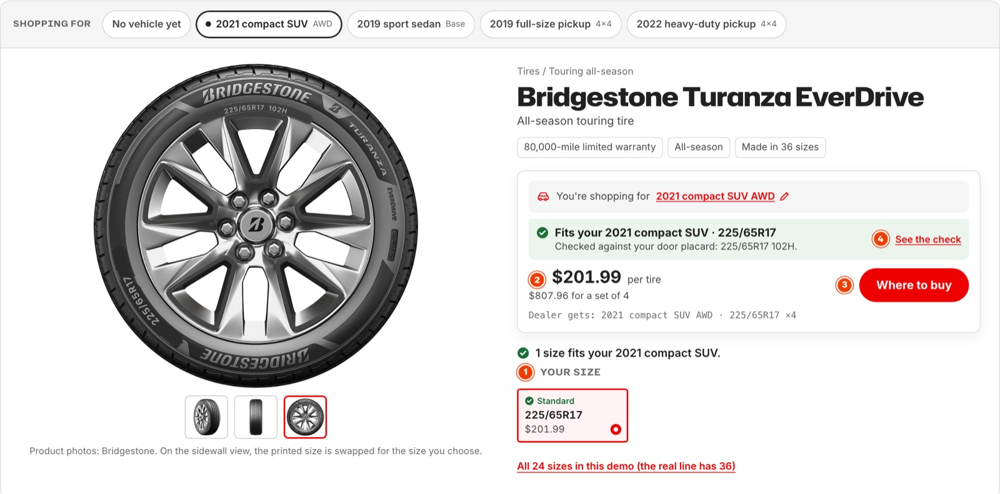
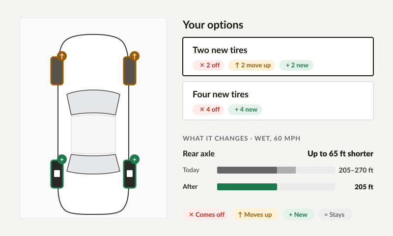

Ryan DeBoer · Prototype playground
A prototype playground between Figma and production
I'd own the gap between Figma and engineering, and close it with both teams. Prototypes are built from production's own components in a sibling repo, carry every state and the handoff notes, and get checked from both sides.
The directory
Where the method already runs
Two working prototypes, then two projects that each show part of the playground on real work. Tire Rack material is shown with names removed.
-

DemoTire Fitment Prototype
Pick a vehicle and watch the page narrow to the sizes that fit, confirm the match on the sidewall, and say so when a tire isn't made for your car.
What it provesThe method end to end: test the feel and every state, with the handoff attached.
Open the prototype → -

Study · Tire Rack public dataA study in simplicity
What each tire option actually changes at the install counter: one car, four colors, and the tested numbers in one place.
What it provesA data-heavy decision cut down until each place says one thing, without hiding what was never tested.
Open the study → -
Opens with the portfolio password
WheelRack · Tire Rack, password protected
A prototype as the handoff
Two product tiles rebuilt from the live site. The edge case runs as it ships today, next to the fix.
What it provesDev notes on each rule name the React state that owns it, so the prototype carries the handoff.
Open WheelRack → -
 Portfolio binder
Portfolio binder
Judgment over agent output
I rebuilt my homepage as a binder of collectible cards with Claude agents, over three days in October.
What it provesThe prompts that steered it are on the page, including two calls I made against the agents' written advice.
Open the binder →
How I work within prototyping
The two rules
Every difference from production is either a numbered note or drift to fix. Nothing else.
This is what lets an agent check the work. A difference with a note is a decision. One without a note gets fixed before handoff.You can break your own prototype, never someone else's.
Each prototype has its own folder, states and fixtures. Shared parts change only through the port, by PR.The repo
Two sibling folders, two owners
Production stays where engineering keeps it. The playground sits next to it, so the agent knows where to look and can only read. Select a folder or file to see its purpose, owner and rule.
- Engineering
- Design
- Synced from web
The pipeline
From a Figma link to a checked prototype
Six steps. The first runs once; the rest run for every feature.
- Connect
The Figma MCP for design files, production read-only from the sibling folder, and GitHub for branches and comments.
once · Figma MCP + ../web (read) + GitHub
- Port
An agent loop copies each production component in. It keeps props, markup, ARIA and tokens, strips analytics and flags, and swaps data fetching for fixtures.
../web component → components/ + component-map.json
- Capture
A Figma plugin exports what the MCP doesn't return cleanly: variant names as states, prototype reactions and timing, flow order, and Dev Mode annotations.
Figma frames → capture.json
- Build
figma-to-playgroundbuilds only from mapped components, turns each variant into a named state with a fixture, and drafts the notes. Anything new goes inproposed/.Figma link → prototypes/<feature>/
- Note and review
The designer edits the notes: today, proposed, the React state and one check. Review happens on a preview link, and decisions go back into the notes.
notes.json → PR with a preview link
- Check both ways, keep current
Parity runs from the playground and from the engineer's branch. A scheduled agent re-ports any component whose production commit changed, and opens a PR.
parity report on the PR + sync PR
Two ways in, one way out.An idea starts in Figma or straight in the playground. Both reach production as code, and what's proven goes back into Figma as a component, mapped to its code with Code Connect.
The note contract
The same note, as data and as a dev note
A worked example from WheelRack's closest-alternative state. The agent reads the JSON and runs the check. People read the rendered note beside the prototype.
As data
prototypes/fitment/notes.json{
"component": "FitmentNotice",
"notes": [
{
"id": 4,
"state": "closest-alternative",
"today": "Picking the finish switches it, and both sizes jump to that finish's defaults with no message.",
"proposed": [
"The dealer picks a finish their size isn't made in. The order changes to the closest size, and the notice says so.",
"Closest: same diameter first, then nearest width, then nearest offset.",
"The changed row gets a visible mark. With reduced motion, a static Changed tag stays until the dealer touches a control.",
"Timing: the changed row's wash fades over 900ms, and the total counts to its new value in 240ms.",
"Focus stays on the finish the dealer picked.",
"Screen readers hear one sentence naming both sizes.",
"Undo is offered."
],
"owner": "selectedFinish, plus notice: what moved and the Undo snapshot",
"check": "Pick a finish the size isn't made in. The closest size is selected, focus stays on the finish, and Undo restores the old size."
}
]
}
As a dev note
Fitment notice · note 4Closest alternative
Interaction Accessibility
TodayPicking the finish switches it, and both sizes jump to that finish's defaults with no message.
Proposed- When the dealer picks a finish their size isn't made in, the order changes to the closest size, and the notice says so.
- Closest means same diameter first, then nearest width, then nearest offset.
- The changed row gets a visible mark. With reduced motion, a static Changed tag stays until the dealer touches a control.
- Timing: the changed row's wash fades over 900ms, and the total counts to its new value in 240ms.
- Focus stays on the finish the dealer picked.
- Screen readers hear one sentence naming both sizes.
- Undo is offered.
CheckPick a finish the size isn't made in. The closest size is selected, focus stays on the finish, and Undo restores the old size.
React state: selectedFinish, plus notice (what moved and the Undo snapshot)
The two-way check
The Fitment notice, checked from both sides
Design runs it from the playground. An engineer runs it from their branch. Both get the same six rows. The check only reports; people decide which side is right.
Parity · Fitment notice
Illustrative · synthetic data · production here is a stand-in, not Tire Rack's code- Match same on both sides
- Intentional different on purpose, with a note
- Drift different with no note: fix it
- Missing on branch the prototype has it, the branch doesn't
The handoff doc
What the engineer's agent reads first
One short doc goes with the prototype, for the engineer and the agent they steer. This one is for the WheelRack edge case.
Start here
The With the fix view and the closest-alternative note. Build from these two.
Ignore
Live today, which is there for comparison, and the earlier explorations in the Figma file.
Context
The product tile prototype uses the same closest-size rule. The Figma fitment spec has the original notes.
Don't miss
Focus stays on the finish the dealer picked. With reduced motion, the Changed tag stays until the dealer touches a control.
prototypes/edge-case/handoff.md · four headings, a few lines each
Agent rules
One rules folder for every tool
Each tool enters through a thin file that points to agent/rules/. Four rules load on every task. The rest load when the task needs them, so the agent works the same way from one prototype to the next.
CLAUDE.mdClaude Code
AGENTS.mdCodex and others
.cursor/rules/Cursor
copilot-instructions.mdGitHub Copilot
Always loaded · every task
systems.mdPicks the route: a product prototype, brand work, or the playground itself.conventions.mdNaming, folders and fixtures.prototype-workflow.mdOne script creates every prototype the same way.contributor-scope.mdBreak your own work, never someone else's.
On demand · when the task needs it
port-component.mdHow a production component comes in: keep, strip, stub.design-system.mdTokens, components, and what lives in proposed/.design-handoff.mdThe note contract and the handoff doc.design-critique.mdReviewing a prototype against the brief and the system.
Tradeoffs and risks
What it costs, and how I'd handle it
A sibling repo, outside production
Faster and safer to prototype in.
It can drift, so the port is automated and syncs by PR.
Fixtures over the real API
Every state is one click away.
Data edge cases can hide, so the production-side check runs on real data.
Notes as JSON over Figma comments
Versioned, and an agent can check them.
Designers have to edit a file, so the playground gets a note editor.
Risks
Overselling "1:1"
The components are the same; the app around them is different. I'd say that up front.
Nobody owns the port
Then it goes stale. Owning it is part of this role.
Access
The agent reads production and never writes. Secrets and environment files are on the ignore list.
If I joined
The first 90 days
- First 30 days
One flow, end to end
Port the core components and take one real flow through capture, build, notes and both checks. Count the questions engineering asks during build, against a recent similar feature.
- Days 30 to 60
The team uses it
Port the next 15 to 20 components. Engineering adds the prototype check to production, and the sync agent starts.
- Days 60 to 90
Themes on the token layer
Brand and theme changes land on the token layer, so they can be tried across real flows before engineering builds them. A new designer can make a prototype in a day.
About this page
What it is
Illustrative. The production side is a stand-in, and Tire Rack material is shown with names removed.
Credit
The idea of a prototyping canvas that ports production frontend comes from Patrick Morgan's Design Studio at Sublime Security (Dive Club). The note contract and the two-way check come from my WheelRack prototypes.
A study in simplicity
What each option actually changes
At the install counter a customer decides with numbers only the installer can read. This is the decision cut down until each place says one thing: one car, four colors, and the tested numbers in one place. A proposal on Tire Rack's public data, not a Tire Rack page.